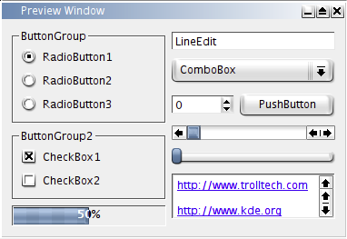
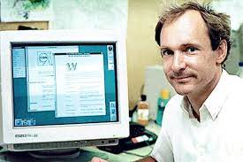
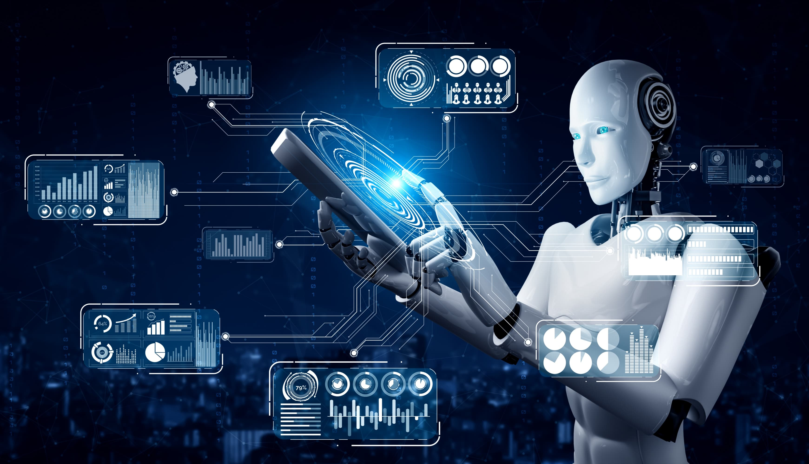

Historical Perspective on Computing
The history of computing is rich with innovation, breakthroughs, and the continuous evolution of technology that has reshaped our world. This section will explore the origins, key developments, influential figures, and the profound societal impacts of computing over time.
Early History of Computing
A. Ancient tools and Techniques
- Abacus
Dating back to around 2400 BCE in Mesopotamia, the abacus is one of the earliest known tools for performing arithmetic processes. Variants were later used in ancient China, Greece, and Rome, showing the global need for early computation.
- Tally Sticks

Found in multiple cultures, tally sticks were used for counting and record-keeping, illustrating the human need to track quantities and transactions
The Antikythera Mechanism (circa 100 BCE - 100 AD):

An ancient Greek analog device, often considered an early form of a computer, used to predict astronomical positions and eclipses decades in advance. Its complexity suggests advanced knowledge of gears and mechanics, foreshadowing future mechanical computation.
B. The 17th and 18th Centuries: The Mechanical Age
Mechanical Calculators:
- Blaise Pascal’s Pascaline (1642)

Designed by the French mathematician to help his father with tax calculations, it could perform addition and subtraction, laying the groundwork for future mechanical computers.
- Leibniz’s Step Reckoner (1673)

This calculator could perform all four arithmetic operations and was an early example of a device using a binary system, which would later become fundamental to computing.
Charles Babbage and Ada Lovelace
- Charles Babbage’s Difference Engine and Analytical Engine (1837)

Babbage’s designs are often cited as the first concept of a general-purpose computer. The Analytical Engine was capable of being programmed with punched cards, an idea that inspired future computing developments.
C.Early 20th Century Developments: The Electromechanical Era
The Turing Machine and Alan Turing:
- Alan Turing (1936)

Proposed the theoretical Turing Machine, which became the foundation for understanding modern computer science. Turing’s work on computability and algorithms laid the groundwork for digital computing and artificial intelligence.
- Konrad Zuse and the Z3 (1941)

Developed by German engineer Konrad Zuse, tAhe Z3 was the world’s first programmable, fully automatic computer. It used electromechanical relays and could perform binary arithmetic, marking a significant step toward modern computing.
D. The Birth of Modern Computers (1940s-1950s):
The Electronic Era
World War II and Computing:
- Colossus Computer (1943)

Developed in the UK to break German codes during WWII, Colossus was the world’s first programmable digital electronic computer. It was instrumental in cryptanalysis, significantly impacting the outcome of the war.
- ENIAC (1945)

The Electronic Numerical Integrator and Computer, developed at the University of Pennsylvania, was the first general-purpose electronic digital computer. Weighing 30 tons and occupying 1,800 square feet, ENIAC could perform thousands of calculations per second, a monumental leap for its time.
Post-War Developments
- UNIVAC I (1951)

The first commercially available computer in the United States, designed for business and administrative use. Its success marked the beginning of the computer industry as a commercial enterprise.
Technological Breakthroughs:
- Transistors (1947)

Invented by John Bardeen, Walter Brattain, and William Shockley at Bell Labs, transistors replaced bulky vacuum tubes, making computers smaller, faster, and more reliable.
- Integrated Circuits (1958)

Jack Kilby and Robert Noyce independently developed the integrated circuit, which combined multiple transistors on a single silicon chip, drastically reducing size and cost and paving the way for modern microprocessors.
E. The Rise of Personal Computing (1970s-1980s) and the Microprocessor Revolution
Microprocessors:
- Intel 4004 (1971)
The world’s first microprocessor, this tiny chip contained all the elements of a central processing unit (CPU). It enabled the development of personal computers and significantly altered the course of computing history.
- MOS Technology 6502
This microprocessors powered early personal computers like the Apple I, Commodore PET, and the IBM PC, catalyzing the personal computing revolution.
Personal Computers
- Apple II (1977)

One of the first highly successful mass-produced personal computers, the Apple II was known for its user-friendly interface and expandability.
- IBM PC (1981)

IBM's entry into the personal computing market set industry standards and opened the door to the widespread adoption of computers in homes and businesses. It also led to the creation of the IBM-compatible market, which defined PC architecture for decades.
Software Innovations
- Microsoft and the Software Industry
Founded by Bill Gates and Paul Allen, Microsoft developed MS-DOS, the operating system for the IBM PC. The success of MS-DOS established Microsoft as a dominant force in software development.
- Graphical User Interfaces (GUIs)

Innovations like Xerox’s Alto and Apple’s Lisa and Macintosh (1984) introduced GUIs to the mainstream, making computers more accessible to non-technical users.
F. The Internet and the World Wide Web (1990s): The Digital Revolution
The Internet’s Origins
- ARPANET (1969)
A project funded by the U.S. Department of Defense, ARPANET was the first network to use packet switching and laid the groundwork for the modern internet. The precursor to the internet, ARPANET was originally a military communication project developed by the U.S. Department of Defense
- DTCP/IP Protocol (1970s-1980s)
Developed by Vinton Cerf and Robert Kahn, these protocols became the standard for data transmission over the internet, allowing diverse networks to communicate.
World Wide Web:
- Tim Berners-Lee (1989)

Invented the World Wide Web while working at CERN. He developed the first web browser and server, creating a system that allowed users to access and share information easily across the internet.
- Dot-Com Boom and Bust (1990s-2000s)

The rapid growth of internet-based companies led to significant economic changes and innovations but also resulted in a speculative bubble that burst in the early 2000s.
Web 2.0
Emerged in the mid-2000s, characterized by user-generated content, social media platforms, and interactive websites. This era saw the rise of companies like Google, Facebook, and Amazon, which have become central to the digital economy.
G. Modern Computing (2000s-Present)
The Age of Ubiquitous Computing
Mobile Revolution
- Smartphones
With the introduction of the iPhone in 2007 and the subsequent growth of Android devices, smartphones have become the primary computing device for billions of people worldwide, offering powerful computing capabilities in the palm of a hand.
- Tablets and Wearables
: Devices like the iPad and smartwatches further extended the reach of mobile computing, making technology more integrated into daily life.
Cloud Computing

- A model that allows users to access and store data and applications on remote servers rather than on local machines. Cloud computing has revolutionized the IT landscape, enabling scalability, flexibility, and cost efficiency.
Companies like Amazon Web Services (AWS), Microsoft Azure, and Google Cloud have become dominant players in the cloud market, offering a wide range of services to businesses and individuals.
Artificial Intelligence and Machine Learning

Refers to the vast amounts of data generated every day by digital activities. This data is often analyzed using data science techniques to uncover patterns, trends, and insights.
Big data and data science are transforming industries by enabling more informed decision-making and fostering innovations in fields such as healthcare, marketing, and urban planning.
H. Impact on Society: Transforming Lives and Industries
- Communication

Innovations like email, social media, and video conferencing have revolutionized how people communicate, making it possible to connect instantly across the globe. Social media platforms like Facebook, Twitter, and Instagram have transformed social interactions, information sharing, and even political movements.
- Economy
Computing has enabled new business models and transformed industries through e-commerce, automation, and data analysis. Online shopping platforms like Amazon and Alibaba have changed how people shop, while automation and data-driven decision-making have increased efficiency and innovation in various sectors.
- Education
Online learning platforms and educational resources have made education more accessible and flexible, allowing people to learn from anywhere at any time. Tools like learning management systems (LMS) and massive open online courses (MOOCs) have expanded access to education and created new opportunities for lifelong learning.
Computing technologies have revolutionized healthcare by improving patient care, streamlining administrative processes, and advancing medical research. Electronic health records (EHRs) have improved the accuracy and efficiency of patient information management, while telemedicine has expanded access to healthcare services. Advances in data analysis and AI have accelerated medical research and personalized medicine.